基于 GMR 框架的动捕数据重定向工作
基于 GMR 框架的动捕数据重定向工作
1. 引言
1.1 背景与目标
GMR（General Motion Retargeting） 是一个通用人体动作重定向开源框架，能够将多种形式的人体运动数据映射到仿人机器人上，底层基于 MuJoCo + mink 进行 IK 求解。
本文的工程目标是：基于 GMR 框架，将 Noitom（诺亦腾）动捕设备采集得到的 BVH 格式人体动作数据，重定向到 智元远征 A2 机器人的目标骨架与关节空间中，从而完成从人体动作表示到机器人动作表示的映射与验证。
1.2 为什么人体动捕不能直接驱动机器人
这一步的核心目的，是先把人的动作数据转换成机器人能理解、能执行的动作表示。
原因在于：人体骨架和机器人骨架并不相同。这里的”不相同”不只是名字不同，更包括以下几个方面：
关节命名和骨架拓扑不同
动捕系统中的人体骨架命名方式，与机器人 URDF / XML 中的关节名称通常并不一致关节定义方式不同
人体骨架中的某些部位，在动捕数据里可能有定义，但机器人未必具有对应关节；反过来，机器人的一些关节定义方式也可能与人体不同自由度不同
人体某些关节可以表达更灵活的三维旋转，而机器人关节通常受到结构和驱动方式限制，自由度更少连杆长度和比例不同
人体四肢长度、躯干比例，与机器人本体的几何尺寸并不一致
因此，原始动捕数据不能直接用于驱动机器人。在真正让机器人使用这些动作之前，必须先完成以下几个步骤：
- 建立人体骨架与机器人骨架之间的对应关系
- 对齐初始姿态
- 完成关节映射
- 通过 IK 求解得到机器人侧可执行的动作结果
- 将人体动作转换为机器人动作序列
1.3 重定向结果及其用途
完成重定向之后，通常可以得到机器人骨架下的动作轨迹、各关节的目标角度 / 姿态序列，以及可用于仿真、回放和后续训练的数据。最终会输出两个结果文件：
.pkl文件：Python 的序列化结果，不能直接以文本方式查看，需要通过pickle模块读取。保存重定向后的动作数据，包含机器人侧的关节角度序列、根节点位姿、时间序列信息等，主要给程序、训练流程或仿真环境继续使用。.mp4文件：动作可视化结果，方便直接查看重定向效果是否正确，例如姿态是否合理、动作是否连贯、是否存在明显穿模或关节异常。
也就是说，.pkl 更偏向给程序使用的数据结果，.mp4 更偏向给人查看的可视化结果。
如果后续需要在 BeyondMiniC 这类框架中进行动作学习或控制策略训练，这里得到的重定向结果就可以作为关键的前置输入——先把原始人体动捕数据转换为机器人骨架空间下的参考动作序列，供后续的动作学习、动作跟踪和策略训练使用。
另一方面，对于部分支持上半身动作开发的机器人，这些重定向结果也可以直接用于上半身运动控制。例如，下半身仍由基于强化学习的站立策略负责维持平衡，而上半身执行重定向后得到的关节动作序列。这种方式能够在不改变底层站立能力的前提下，实现上半身动作的开发与验证。
2. 整体流程概览
整个重定向工作分为以下五个步骤：
- 建立动捕骨架与机器人 link 的名称映射：弄清楚”谁对应谁”
- 在 GMR 中注册目标机器人 A2：让框架认识这个机器人
- 确认第一帧参考姿态与局部坐标方向：搞清楚”目标姿态长什么样”
- 编写并调试 IK 配置：把差异写成配置参数并逐步调好
- 运行与导出结果：跑通完整流程，输出数据和视频
3. 环境准备
在开始配置和调试动作重定向之前，需要先准备以下工具和环境：
GMR 代码仓库
从 GitHub 拉取GMR（General Motion Retargeting）框架代码，后续的配置文件、重定向流程和调试工作都基于这个仓库进行。Blender
用于查看和处理骨架、动画以及模型文件，在检查 BVH / FBX 动作数据时会比较方便。MuJoCo
用于机器人模型加载、运动学验证和结果调试，可以帮助确认重定向后的动作是否符合目标机器人结构。Isaac Sim
查看关节坐标和关节角度会更方便，适合配合 MuJoCo 一起使用，用来辅助调试目标骨架和关节映射关系。
4. 概念与配置说明
在动手操作之前，有几个概念值得先理解清楚。它们贯穿整个调试过程，理解了这些之后，后续每一步的操作目的都会更明确。
4.1 为什么对齐的是 link 而不是 joint
直接对齐 joint 有一个根本性的障碍：人体关节和机器人关节并不相同。
以肩部为例——人体侧只有”一个肩关节”，但在机器人侧往往被拆解为 shoulder_pitch、shoulder_roll、shoulder_yaw 三个独立关节。一个人体动作对应多个机器人 joint 的组合，而且这个组合的解通常不唯一。如果强行在 joint 层面做对齐，首先面临的就是”如何建立对应关系”这个非常复杂的问题。
但换一个视角就清晰了：我们真正需要的，不是”关节转了多少度”，而是”这段肢体最终在哪里、朝向如何”。把目标定义在 link（肢体段）的位置和朝向上，IK 算法自然会反解出机器人各关节应该怎么转，这也正是 IK 存在的意义。
因此，所谓”对齐一段骨骼”，并不是把骨骼逐点贴合，而是以该 link 的参考节点为基准，确定其局部偏移和朝向，使其在空间中与人体对应部位匹配。位姿对了，剩下的就是 IK 算法的事情了。
4.2 ik_configs 文件名的含义
在 general_motion_retargeting/ik_configs/ 目录下，存放的是一组用于 IK 重定向的配置文件，文件名通常长这样：
bvh_lafan1_to_g1.jsonbvh_nokov_to_agibot_a2.jsonbvh_xsens_to_h1_2.jsonfbx_to_g1.jsonsmplx_to_h1.json
理解这些文件名时，按下面这个顺序来看：先看动作数据是什么表示形式，再看动作数据来自哪里，最后看要重定向到哪个目标机器人。
动作数据的表示形式（文件名前缀）：
- BVH：典型的骨架动画表示，核心是骨架层级 + 每帧关节运动
- FBX：也能表示骨架动画，但不止骨架，还能带网格、材质、蒙皮等
- SMPL-X：不是单纯”骨架怎么动”，而是”完整人体怎么表示、怎么动”
简单来说，bvh / fbx 更偏骨架动画，smplx 更偏完整人体表示。
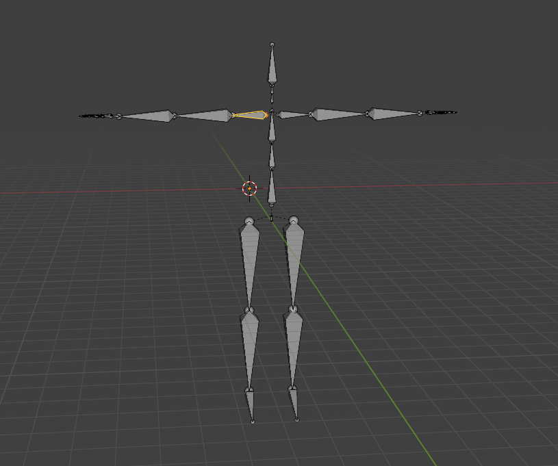
动作数据的来源（文件名中间段）：
lafan1：公开人体动作数据集nokov：光学动捕系统xsens：惯性动捕系统noitom（诺亦腾）：惯性、光学或光惯融合的动捕方案
目标机器人（to_xxx 部分）：即重定向的目标，如 to_g1、to_agibot_a2 等。
本文的数据来自 Noitom 设备，但因为导出的 BVH 在骨架层级和命名上与项目中 bvh_nokov 的处理链兼容，因此直接复用了作者提供的 nokov 模板，实际验证无问题。
4.3 ik_match_table 各字段解释
配置文件里的映射表，每条记录的格式如下：
1 | "机器人 body 名": ["动捕骨骼名", 平移权重, 旋转权重, [位置偏移 x,y,z], [旋转偏移 w,x,y,z]] |
| 字段 | 类型 | 含义 |
|---|---|---|
| 动捕骨骼名 | 字符串 | 对应动捕数据中的骨骼/刚体名称 |
| 平移权重（pos_weight） | 标量 | IK 求解时对该 link 位置约束的权重，越大跟随越严格 |
| 旋转权重（rot_weight） | 标量 | IK 求解时对该 link 朝向约束的权重，越大跟随越严格 |
| 位置偏移（position offset） | [x, y, z] |
机器人 body 相对动捕骨骼的局部平移偏移 |
| 旋转偏移（orientation offset） | [w, x, y, z] |
机器人 body 相对动捕骨骼的局部旋转偏移（四元数） |
需要特别注意：本框架中四元数采用 [w, x, y, z] 的顺序，而不是某些库中常见的 [x, y, z, w]。写入配置文件时务必确认顺序，否则旋转结果会出错。
4.4 两个 table 的作用与两阶段求解思路
IK 配置文件里有两个 table（ik_match_table1 和 ik_match_table2），格式相同，映射的骨骼完全一致，区别只在权重数值上：
table1：旋转对齐阶段
pos_weight非常小甚至为 0，rot_weight较大。目的是让各 link 的朝向先对齐，不追求位置准确。table2：位置对齐阶段
pos_weight变为非零值，rot_weight反而降低。在 table1 结果的基础上，进一步把各 link 的空间位置拉准。
两者共享同一个机器人状态（configuration），table1 先跑，table2 在前者的结果上继续迭代求解。
之所以要拆成两阶段：人体和机器人之间存在肢体长度和关节结构差异，如果同时优化位置和旋转，两者容易互相干扰——为了追位置而破坏姿态是常见现象。拆成两阶段后，先让姿态朝向稳定下来，再用位置约束做精细修正，收敛更稳定，调试也更容易定位问题。
5. 建立动捕骨架与机器人 link 的名称映射
这一步只做一件事：弄清楚动捕数据里的哪段骨骼，对应机器人上的哪个 link。
不同厂商的动捕设备和机器人对同一段肢体的命名往往各行其是：叫法不同是常态，甚至一方定义了某个部位而另一方根本没有对应项。如果不先把名字对齐，后续的所有计算都是在操作错误的对象，结果自然无从谈起。
5.1 用 Blender 查看 BVH 骨架结构
- 打开 Blender，点击左上角 文件 → 导入 → BVH，导入动捕文件
- 导入后会出现一个人体骨骼模型
- 在左上角把模式从物体模式（Object Mode）切换到编辑模式（Edit Mode）
- 在视口中点击任意一段骨骼，右侧属性面板会立即显示该骨骼的名字
- 把左侧大纲视图的层级全部展开（点击所有向下箭头），就能看到整套骨架以根节点为起点按树状结构展开的完整层级
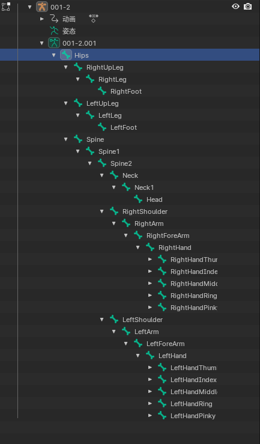
图 2：Blender中的树状图
这个树状结构非常有价值：不仅能知道”某一段骨骼叫什么”，还能理解整个人体骨架的拓扑关系——哪些是父节点，哪些是子节点，哪条链属于手臂，哪条链属于腿部。
5.2 用 Isaac Sim 查看机器人 link
- 打开 Isaac Sim，将 A2 的
.urdf文件导入 - 导入后无需任何额外操作
- 在场景里直接用鼠标点击机器人上任意一个 link
- 右侧属性面板会自动显示该 link 的名称
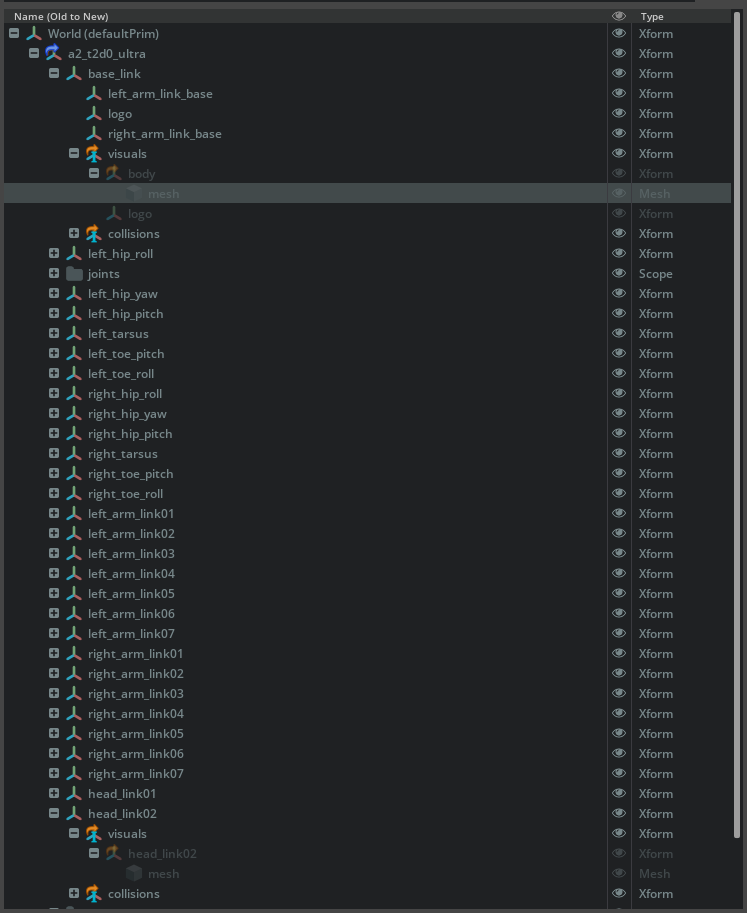
图 3：Isaac Sim中的 link 名称
逐段点击下来，很快就能在脑子里建立起”这段机械臂对应人体的哪段骨骼”的直觉映射，整张对应表的建立速度比脚本对比快得多。
如果更习惯用脚本，也可以分别写脚本把动捕数据和机器人模型里所有 body/link 的名字打印出来，人工比对。但实际工程里，打印结果更适合作为辅助核对手段，而不是主要建表方式。
5.3 建立名称映射表
两侧的名字都看清楚之后，把”谁对应谁”整理成一张表，例如：
| 机器人 link | 动捕骨骼 |
|---|---|
torso |
Hips |
left_hip_yaw |
LeftUpLeg |
left_tarsus |
LeftLeg |
left_toe_roll |
LeftFoot |
left-arm-link2 |
LeftArm |
L_paw |
LeftHand |
| … | … |
到这里为止，我们已经知道了”机器人哪一段 link 对应人体哪一段骨骼”，接下来就可以把这张对应关系写入 GMR 的 IK 配置中。
6. 在 GMR 中接入 AgiBot A2
GMR 的机器人资产统一放在 assets/ 目录下，每个机器人对应一个子文件夹。首先将从官方获取的 A2 XML 模型文件放到对应目录：
1 | assets/ |
完成模型文件放置后，还需要在 general_motion_retargeting/params.py 中注册 AgiBot A2 的相关配置。
6.1 注册机器人模型路径
在 ROBOT_XML_DICT 中添加 A2 对应的 XML 路径：
1 | "agibot_a2": ASSET_ROOT / "agibot_a2" / "assets" / "mujoco" / "model.xml", |
这一项将机器人名称 agibot_a2 关联到本地 MuJoCo 模型文件路径，供后续加载机器人模型时使用。
6.2 注册 IK 配置文件路径
在 IK_CONFIG_DICT 中，为 bvh_nokov 这一类输入添加 A2 的 IK 配置文件：
1 | "bvh_nokov": { |
当输入动作数据采用 bvh_nokov 格式时，程序会自动读取 bvh_nokov_to_agibot_a2.json 作为对应的 IK 重定向配置文件。
6.3 注册机器人根节点名称
在 ROBOT_BASE_DICT 中添加 A2 的根节点名称：
1 | "agibot_a2": "torso", |
根节点名称需要和机器人模型中的实际根 body 保持一致，需结合打印结果确认后再填写。
6.4 配置可视化相机距离
在 VIEWER_CAM_DISTANCE_DICT 中添加：
1 | "agibot_a2": 3.0, |
这一项只影响可视化显示效果，不影响动作重定向或 IK 求解本身。由于不同机器人体型高度各异，需要单独配置合适的观察距离。
6.5 补充命令行参数入口
在 scripts/bvh_to_robot.py 中，将 --robot 参数的 choices 列表补上 "agibot_a2"：
1 | choices=[..., "agibot_a2"] |
完成以上全部修改后，AgiBot A2 就被正式接入到了 GMR 的机器人配置体系中，后续就可以直接通过命令行参数指定目标机器人为 A2。
说明：本文数据来自 Noitom 设备，但因为导出的 BVH 在骨架层级和命名上与项目中
bvh_nokov的处理链兼容，因此直接复用了作者提供的 nokov 模板，实际验证无问题。
7. 第一帧调试——确认 A-Pose 与参考局部坐标方向
注意：如果动捕数据第一帧默认是 T-Pose，可以跳过本步骤。
在实际采集过程中，动捕数据的第一帧通常不是机器人仿真环境中的默认姿态。以本文数据为例，人体动捕的初始姿态为 A-Pose：双臂自然下垂并向两侧斜向展开，整体呈现”A”字形；而机器人模型在 MuJoCo / Isaac Sim 中导入后，默认通常处于 T-Pose，即双臂水平展开。
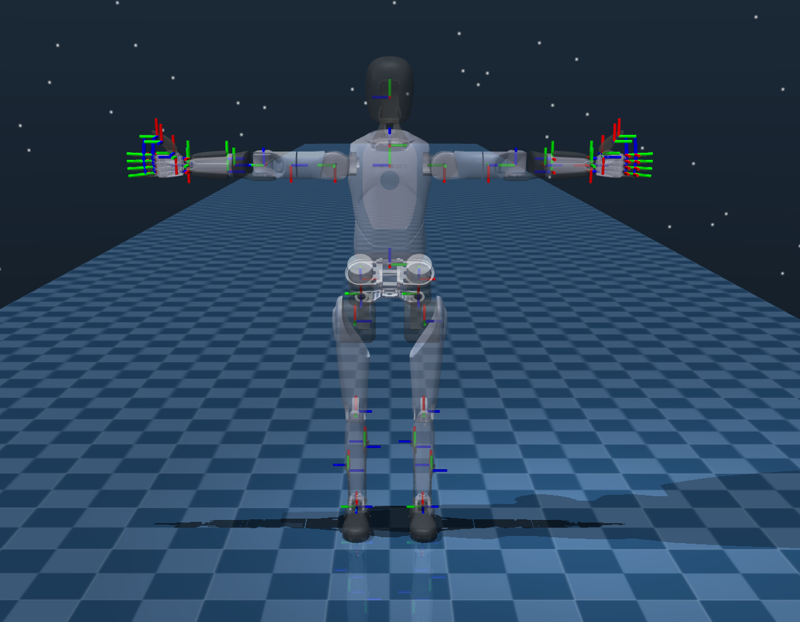
这两种初始姿态并不一致，意味着各个待重定向 link 在初始状态下的朝向也不一致。如果不先把这一差异弄清楚，机器人在第一帧就会出现明显的姿态错误，并进一步影响之后所有帧的重定向结果。
因此，本步骤的目标是先完成两件事：确认机器人需要被还原到什么样的 A-Pose，以及查看各待重定向 link 的局部坐标方向。
7.1 第一帧打断点，观察当前状态
在 scripts/bvh_to_robot.py 的主循环里加一个第一帧断点：
1 | if i == 1: |
让程序在处理完第一帧后停下来，观察 MuJoCo 可视化窗口里当前的姿态。这时候机器人的姿势往往非常奇怪、扭曲，甚至可能飞在空中——这是正常现象，因为当前还没有做任何初始姿态对齐。在 MuJoCo 窗口中按下 T（透明模式）和 F6，就会显示出各 link 当前未旋转状态下的自体坐标轴方向。
7.2 在 MuJoCo 中手动摆出 A-Pose
新建一个独立的 MuJoCo 场景，把 A2 的 model.xml 直接拖进去，然后在右侧面板中打开 joint 相关控制项，手动拖动关节，把机器人调整到与 BVH 第一帧一致的 A-Pose。
实际操作时很容易疑惑”到底应该转哪几个关节、转多少才算对”。我的解决方法是：先参考机器人官方给出的产品图片或宣传图，直接观察其默认站立姿态下的外观细节，比如肩部外壳的展开方式、手臂外壳的朝向以及前臂连接后的整体轮廓，然后在仿真中通过旋转 joint 把这些外观特征尽量对齐。外观特征基本一致时，对应的关节旋转组合通常也就是合理的。
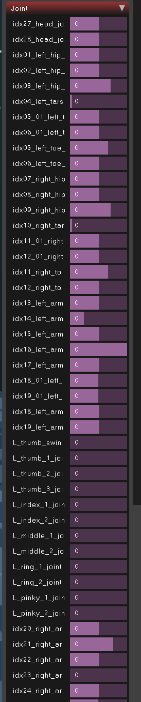
机器人调整到 A-Pose 后，按下 T 和 F6，就能看到每个 link 在目标姿态下的局部坐标轴方向。这里需要注意，F6 是循环切换不同显示模式的：如果误按多次，只需继续按几次直到重新回到局部坐标轴模式即可。
7.3 在 Isaac Sim 中逐个核对
之所以还要借助 Isaac Sim，是因为当机器人结构较复杂时，MuJoCo 里多个 link 的坐标轴常常会在空间中重叠，很难判断某一组坐标轴究竟属于哪个 link。Isaac Sim 支持直接在场景中点击单个 link，界面会高亮对应对象，查看起来更清晰。
在 Isaac Sim 中，如果需要调整某个关节的角度，需要先在 Stage 里展开机器人对应的 joints 文件夹。这个文件夹通常默认是收起的，需要手动展开。找到目标 joint 后，点击进入其属性面板，在 Target Position 中输入希望旋转到的角度。输入完成后，记得启动仿真，此时机器人就会按照设定的关节角度变换到对应的姿态，例如我们想要的 A-Pose 。
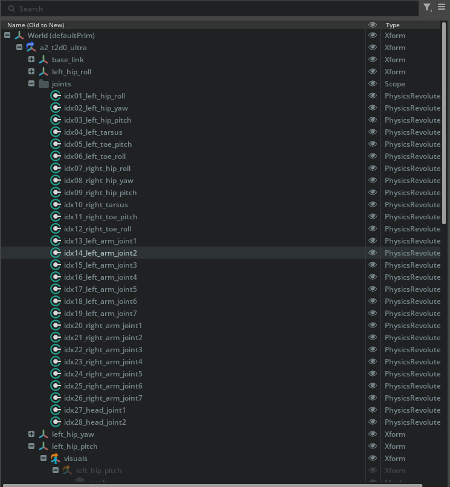
需要注意的是，点击 link 后 Isaac Sim 默认显示的是世界坐标系（World Frame）下的坐标轴，每个 link 看起来方向都一致。此时按下键盘 W 键，将显示模式切换为物体坐标（Local Frame），再逐一点击不同的 link，就能看到每个 link 各自的局部坐标轴方向，不同 link 之间的朝向差异一目了然。
将 Isaac Sim 中看到的局部坐标方向与 MuJoCo 里的结果相互验证，两者一致后，即可以 Isaac Sim 的物体坐标方向作为最终的参考坐标方向。
到这一步，我们已经知道每个关键 link “应该长成什么姿态”和”正确的局部坐标轴应该指向哪里”，接下来就可以把这种差异写成 IK 配置中的偏移量。
8. 编写并调试 IK 配置
这一步是全文最核心的部分。目标是把前面几步观察到的差异，一步步写成 IK 配置参数并验证效果。
8.1 先写出最小可运行版本的 ik_match_table
在 general_motion_retargeting/ik_configs/ 目录下新建 bvh_nokov_to_agibot_a2.json，把 Step 1 建立的名称映射写进去。
初始权重策略：初始化阶段建议采用”低平移、中高旋转”的保守策略。原因在于，重定向初期应优先保证肢体朝向正确，而不必强求末端位置严格重合。由于机器人与人体之间通常存在肢体长度和布局差异，若平移约束过强，求解过程容易为了追逐位置误差而破坏整体姿态。
在所有 link 中，torso 的权重都应设置为最高——它决定整套骨架在空间中的整体位置和主方向，一旦 torso 出现偏差，其余 link 的对齐结果也会随之失去参考基准。对于手、脚等末端 link，初始阶段不宜赋予过高的平移权重，以免末端误差反向拉扯主干和中间关节。
偏移量初始化：位置偏移先设为 [0, 0, 0]，旋转偏移先设为单位四元数 [1, 0, 0, 0]（表示无旋转）。全置零的目的是先暴露两个坐标系的原始对齐状态，在没有任何人工干预的情况下观察存在多大的偏差，再针对性地调整。
初始配置文件示例如下：
1 | { |
注意此时 use_ik_match_table2 先设为 false，table2 留空，等 table1 调好之后再处理。
8.2 调整 table1 的旋转偏移
这一阶段的目标只有一个：让每个 link 的朝向对齐。
调参的核心流程是：逐 link 进行校正，每次只关注一个 link，比较其在 MuJoCo 中的当前局部坐标轴方向与 Isaac Sim 中的参考方向，计算两者之间的旋转差，写入配置中的 rotation offset。
以根节点 torso 为例说明具体过程：
运行重定向脚本，让程序在第一帧暂停。在 MuJoCo 中按 T 切换透明模式，观察 torso 的局部坐标轴方向，例如：蓝色朝前，红色朝左，绿色朝下。
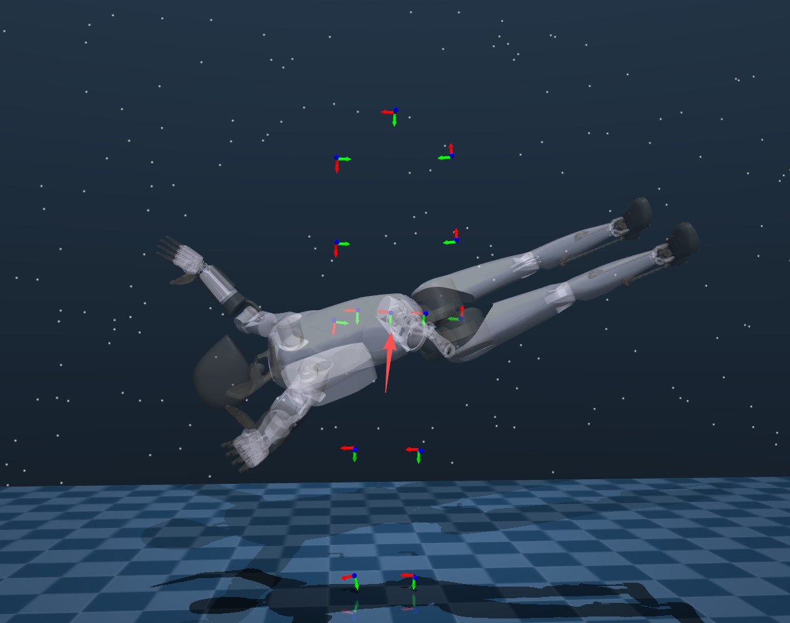
再在 Isaac Sim 中查看同一 link 的局部坐标轴方向，例如：红色朝前，蓝色朝上，绿色朝右。
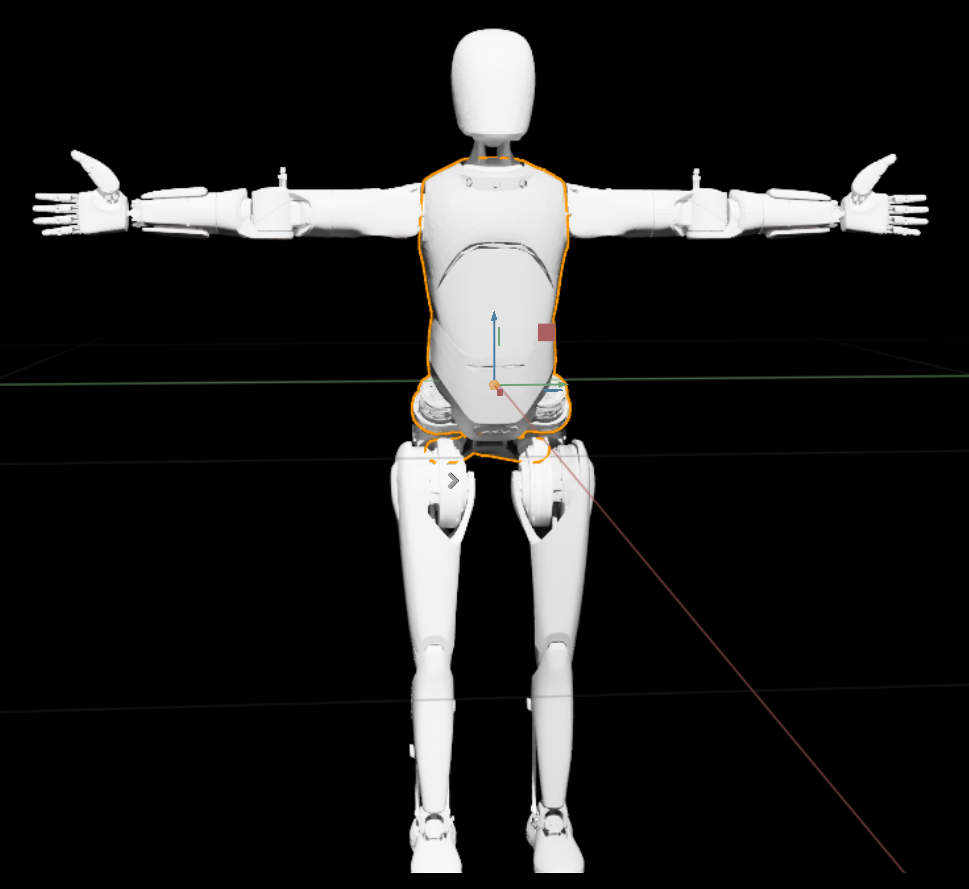
目标就是找到一组旋转，使 MuJoCo 里的方向变换到与 Isaac Sim 一致。
分析旋转时，建议固定采用先绕 x 轴、再绕 y 轴、最后绕 z 轴的顺序，用右手定则判断正负方向：将右手大拇指指向当前旋转轴的正方向，其余四指弯曲的方向即为正旋转方向。对于上述 torso 的情况，先绕 x 轴负方向旋转 90°，再绕 z 轴负方向旋转 90°，即可对齐。
得到旋转角度后，用在线工具（如 Rotation Converter）转换为四元数并写入配置文件。上述旋转对应的四元数为 [w, x, y, z] = [0.5, -0.5, -0.5, -0.5]。
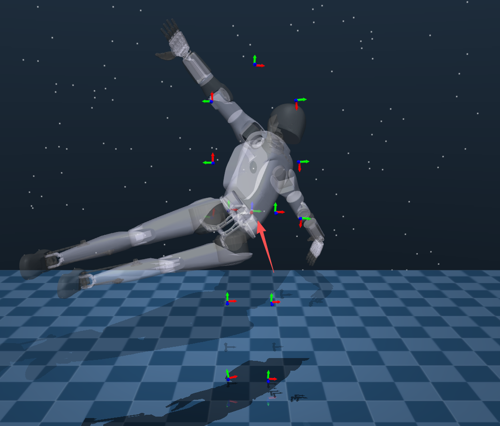
将该四元数写入对应 link 的 rotation offset 后，再次运行脚本观察效果。按照同样的方法逐个完成其余 link 的旋转偏移配置，机器人整体姿态就会逐渐恢复正常。
8.3 调整高度与位置偏移
旋转方向都对了之后，接下来处理位置相关的参数。建议按顺序来：先调高度，再调 position offset。高度没对的情况下，position offset 的调整可能不精确。
调整 human_height_assumption
旋转调完后，可能会发现机器人整体漂浮在空中或陷入地面。此时调整配置文件中的 human_height_assumption：机器人在天上则调大，在地里则调小，直到脚底大致踩在地面上为止。
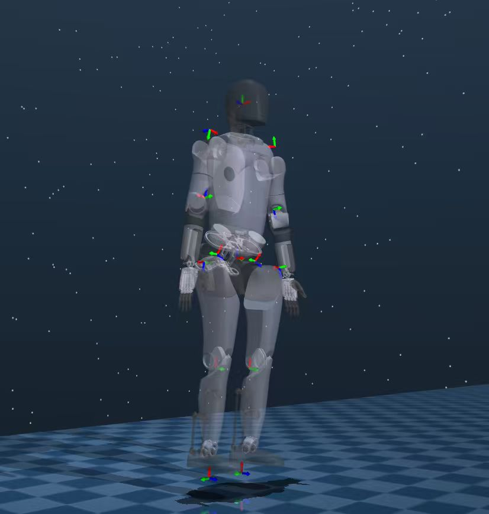
调整 position offset
高度对了之后，再处理各 link 的位置偏移。方法与调旋转类似：估计坐标系距参考点在 xyz 方向上的偏差，输入对应正负值，观察坐标系移动效果后微调。位置偏移比旋转直观，调起来相对容易。
8.4 复制 table1，配置 table2 进行位置精修
table1 调好后，将其内容复制粘贴为 table2，然后：
- 把
"use_ik_match_table2": false改为true - 将各 link 的
rot_weight调小，pos_weight调大
权重没有固定公式，根据实际效果反复微调。最终判断标准：机器人能跟随动捕数据完成对应动作，脚底不悬空、不穿地，整体动作连贯——重定向即告完成。
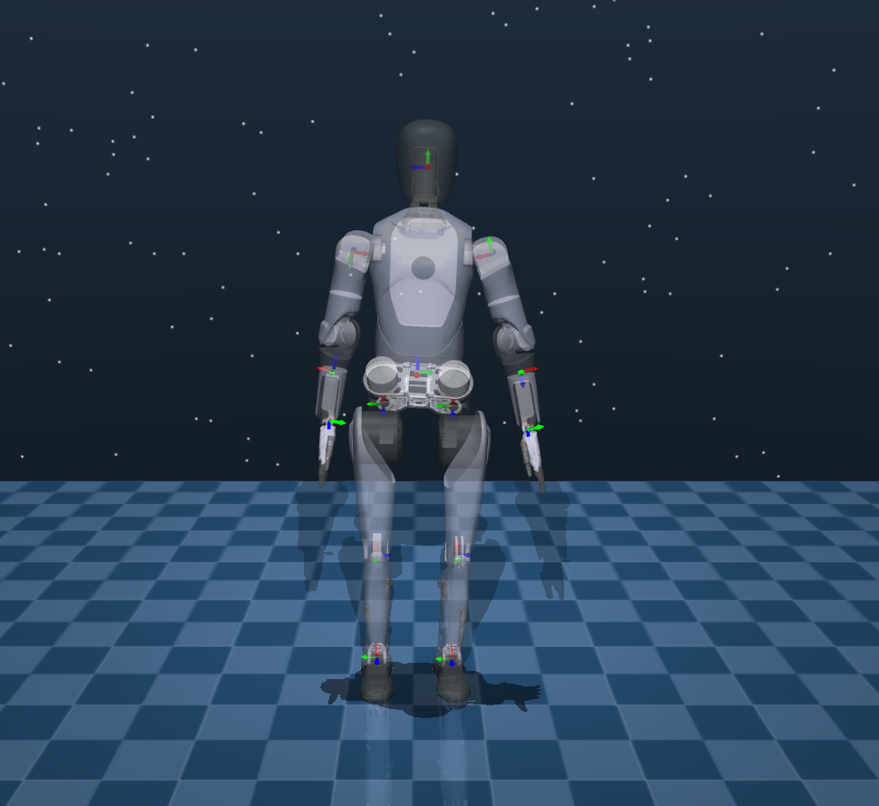
9. 运行与导出结果
调好配置后，用如下命令跑完整动作序列：
1 | cd scripts |
--format nokov：指定 Nokov 格式的 BVH 解析器--record_video：同步录制 MuJoCo 可视化视频--save_path：保存 qpos 数据供后续使用（RL 训练、复现等）
10. 总结与经验
| 步骤 | 核心问题 | 涉及文件 |
|---|---|---|
| 5. 名称映射 | 谁对应谁？ | Blender / Isaac Sim |
| 6. 注册机器人 | 怎么让 GMR 认识 A2？ | params.py |
| 7. 参考姿态 | 目标初始姿态和局部轴是什么？ | MuJoCo / Isaac Sim |
| 8. IK 配置 | 怎么把差异写成配置并调好？ | bvh_nokov_to_agibot_a2.json |
| 9. 运行导出 | 怎么跑？ | scripts/bvh_to_robot.py |
几条实际调试中总结的经验：
- table1 和 table2 分开调：先把旋转调好，再开 table2 做位置精修，不要两者同时动
- 每次只改一个 link：改完一个就跑一次验证，否则出问题很难定位是哪一步出的错
- 高度先于位置偏移：
human_height_assumption没调好的情况下，position offset 会一起偏，容易互相掩盖问题 - A-Pose 第一帧是标定帧：把第一帧调对是整个流程的基础，第一帧对了，后续帧的质量通常也会跟着好起来